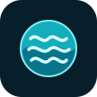

Point until a control highlights, then pinch your thumb and index finger to click. The same action works with either hand.
NATIVE CONTROL PANEL
Choose a preset to get an immediate effect. Use + / - for small adjustments, or pinch and hold a slider handle to move it.
Hide clears the panel. A small Controls tab stays at the lower right of your view. Point at it and pinch to reopen.
COMPACT CONTROLS TAB - SCREEN FIXED
LEFT EYE
RIGHT EYE
SYNTHETIC CAMERA INPUT - NOT A HEADSET RECORDING
This preview renders the exact native panel geometry, font atlas, and shaders. Panel buttons are interactive in the installed Quest app. View size above 100% magnifies the available camera image.